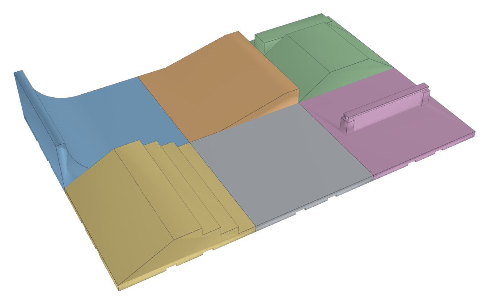
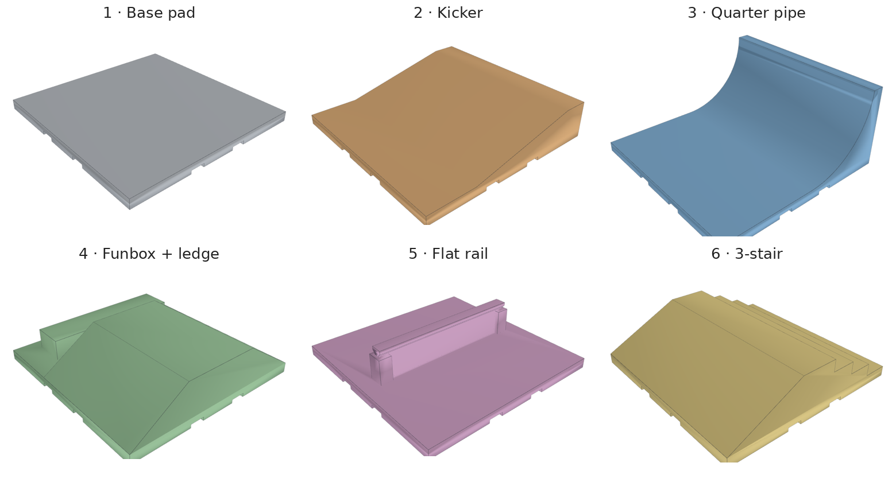
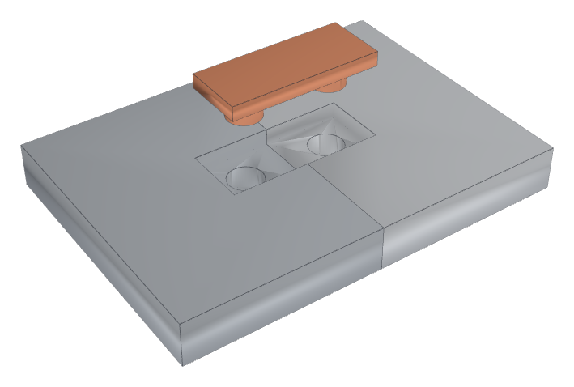

A PLTW Problem is open-ended. Your team defines the solution within the constraints, tests it, and improves it.
🎯 Your goal
- We can solve an open design problem as a team: one connected, rideable park.
- I can design my sections to a shared standard and make them print.
- I can test, revise with named versions, and present my work.
🧰 You’ll need
- Your team, team agreement, and Team##_SkatePark document
- Class connector and clearance
- Calipers, notebook, and decision matrix
- Fingerboards for ride-testing
- Pre-flight checker on this page
⏳ Time and limits
- 14 class meetings over 5 weeks (May 3 – Jun 3). No class Mon May 31 (Memorial Day).
- 2 required sections per team. Up to 2 stretch sections if you’re on track. Each section is 180 mm or less on every side.
- Your first required section is due Tue May 11. All required print files are due Thu May 13. Stretch sections are due Thu May 20 and print only if there’s printer time.
- Licensed students print their team’s sections with the teacher in the room. Required sections and their reprints print first.
- Every section uses the class connector and clearance.
Step-by-step plan
Follow the steps in order. The minutes are a guide. Check off each checkpoint before you move on.
Week 16 · plan and design
- 47 minMon: read the brief. Onshape 5.1: measure a real obstacle and reverse engineer it.
- 85 minTue: brainstorm, then a decision matrix. Choose your two required sections and who owns them. List stretch ideas.
- 85 minThu: layout sketch and dimensions. Start modeling on your branch. Submit the Park Plan.
Checkpoint: Park Plan submitted Thu May 6.
Week 17 · model and check
- 47 minMon: model your required sections on your branches.
- 85 minTue: pre-flight your first required section and submit it to print today. Keep modeling the second one.
- 85 minThu: merge the branches. Pre-flight the second section. Export, name, and submit your required print files.
Checkpoint: First section in Tue May 11. All required print files submitted Thu May 13.
Week 18 · print, fit, revise (round 1)
- 47 minMon: licensed students start prints. Fit-test sections that came back.
- 85 minTue: revise what didn’t fit. Save a named version (v2). Reprint. On track? Submit a stretch section.
- 85 minThu: fit your sections to a neighbor team’s. Update the revision log.
Checkpoint: Fit Test + Revision Log submitted Thu May 20. Stretch sections in by today.
Week 19 · ride-test and revise (round 2)
- 47 minMon: fit-test your reprints. Log what changed.
- 85 minTue: ride-test across connected sections. Revise again if needed (v3). Make the assembly drawing.
- 85 minThu: queue your last reprints by the end of class. Finish the assembly drawing and the revision log.
Checkpoint: Revision Round 2 + Ride Test submitted Thu May 27. Last reprints are in.
Week 20 · assemble and show
- 85 minTue: Onshape 5.4: document the project. Assemble the full park.
- 85 minThu: ride it. Present your section. Write or record your reflection.
Checkpoint: Final Park + Showcase and Reflection submitted Thu Jun 3.
Laptop or iPad?
| Task | 💻 Laptop | 📱 iPad |
|---|---|---|
| Team roles | Best for the assembly, merge, and drawing jobs. | Good for modeling a single section, photos, and the ride-test video. |
| Print-file naming | Rename in Downloads before uploading: Team07_Ramp.3mf. | In Files, long-press → Rename → Team07_Ramp.3mf, then upload. |
| Showcase evidence | Assembly drawing PDF and Onshape 5.4 documentation. | Photos and a 30-second ride video. Add them to Canvas from Photos. |
| Reflection | Type it in Canvas, or use the webcam to record. | Canvas app → Record Audio or Video, 1–2 minutes. |
More device help: Laptop or iPad? The full guide.
Watch first: the capstone in 90 seconds
Read the transcript
Your class is going to build one fingerboard skate park. Each team of three designs two required sections, plus up to two stretch sections if you're on track. Ramps, ledges, rails, stairs: whatever you dream up. Every section uses the same class connector and clearance, so they all snap together. Each section must fit within 180 millimeters, at real fingerboard scale. In Week 16, you plan and design. Your park plan is due Thursday, May 6. In Week 17, you model and check. Send your first section by Tuesday, May 11. All required print files are due Thursday, May 13. In Week 18, licensed students print, and you fit-test and revise. In Week 19, you ride-test across sections and revise again. Last reprints go in by May 27. In Week 20, you assemble the whole park and show it off. Before you submit print files, run the pre-flight check. Fits the plate. Uses the standard. Prints flat. Nothing too thin. Millimeters. Named right. Required sections print first. Stretch sections print only if there's printer time. When sections come back, fit them together and save a named version in Onshape for each revision. Then ride the park. Every teammate presents their section. Twelve teams, one park.
Everything you’ve learned shows up here
- Onshape modeling (Units 2–4) — configurations, in-context modeling, and branch and merge.
- Design for printing (Wk 8) — flat, support-free, and fits the plate.
- Tolerance (Wk 5, 8, 9, 12, 14) — the clearance that makes the connection standard fit.
- Working drawings (Wk 11) — your section and assembly drawing.
- Onshape Unit 5 — the design process, versions for each revision, and documenting your project.
The five weeks
| Week | Phase | What you do | Deliverable |
|---|---|---|---|
| Wk 16 · May 3–6 | Launch + design | Read the brief. Do Onshape 5.1: measure a real fingerboard obstacle and reverse engineer it. Use a decision matrix to pick your two required sections and their owners. Sketch and dimension them. Start modeling on your branch. | Park Plan · due Thu May 6 |
| Wk 17 · May 10–13 | Model + check | Model your required sections to the standard. Submit your first section as soon as it passes pre-flight (by Tue May 11). Merge branches into the team assembly. Pre-flight and submit the second. | Print Files + Pre-Flight · due Thu May 13 |
| Wk 18 · May 17–20 | Print, fit + revise | Licensed students print the sections, with the teacher in the room. Fit-test. Do Onshape 5.3: save a named version for each revision (v1, v2, …). Reprint. Teams on track may submit up to two stretch sections. | Fit Test + Revision Log · due Thu May 20 |
| Wk 19 · May 24–27 | Ride-test + revise again | Fit-test the reprints. Ride-test across connected sections. Revise again if needed. Make the assembly drawing. Last reprints go in by Thursday. | Revision Round 2 + Ride Test · due Thu May 27 |
| Wk 20 · Jun 1–3 | Assemble + show | Do Onshape 5.4: document your project. Assemble the full park, ride it, and present. | Final Park + Showcase and Reflection · due Thu Jun 3 |
📚 Onshape lessons
Onshape Intro to CAD — Unit 5: Putting CAD to Work. Use lessons 5.1, 5.3, and 5.4 (5.2 is optional). Each lesson has a slide deck and a student guide.
Required print files are due Thursday, May 13 (your first section by Tuesday, May 11). That gives about two and a half weeks to print, fit, and reprint before school ends. Required sections print first; stretch sections print if there’s time.
Pre-flight checklist (before you submit print files)
- Fits the plate. Every section is 180 mm or less on every side.
- Uses the standard. Pegs and sockets match the class connection standard and clearance.
- Prints flat. The largest flat face sits on the plate. No supports needed.
- No tiny features. Nothing thinner than about 1 mm.
- Units are mm. Check the size in Onshape with the Measure tool before you export.
- Named right. Each file is named
Team##_SectionName.3mf.
Starter park: a worked example
Not sure where to start? Here is a six-section starter park we built to the same rules you follow: every section is 150 × 150 mm, prints flat with no supports, and joins its neighbors with one shared connector. Use it to see what a finished park looks like, to ride-test your fingerboard, or as a base to build your own sections on.


| # | Section | Size (mm) | What it teaches |
|---|---|---|---|
| 1 | Flat base pad | 150 × 150 × 8 | The base every section starts from, with the connector built in |
| 2 | Kicker ramp | 150 × 150 × 30 | A sketch profile extruded across the pad |
| 3 | Quarter pipe | 150 × 150 × 68 | An arc in the profile (60 mm radius) that prints with no supports |
| 4 | Funbox with ledge | 150 × 150 × 38 | Two ramps and a flat top, plus a grind ledge |
| 5 | Flat rail | 150 × 150 × 34 | A grind rail with end posts that still prints flat |
| 6 | Three-stair set | 150 × 150 × 38 | Steps sized for a fingerboard |
How the sections connect

This is an example standard, not yours. Your class picks its own connection standard and clearance in Week 14. Before you build on the starter park, swap these numbers for your class standard.
| Feature | Example value |
|---|---|
| Peg diameter | 6.0 mm |
| Clearance | 0.3 mm (so the socket is 6.3 mm) |
| Sockets per edge | 2, 40 mm apart, centered on the edge |
| Socket position | 8 mm in from the edge, 7 mm deep (1 mm of plastic left on top) |
| Underside pocket | 11.6 mm wide, 3 mm deep, open at the edge |
| Link | 27 × 11 × 2.6 mm, with two 6 mm pegs 4 mm tall, 16 mm apart |
🖨️ Printing the starter park
Every section fits the A1 mini plate and prints as it comes: base side down, no supports. Print the links separately; one file has 14 of them, enough to join all six sections (7 shared edges, 2 links each). Check one link in one socket first. If it is too tight or too loose, change the clearance and reprint before you print the whole set.
📦 Print files
1 Base pad · 2 Kicker · 3 Quarter pipe · 4 Funbox with ledge · 5 Flat rail · 6 Three-stair set · Links (14)
Try it: pre-flight checker
Type a section's size and file name, and check off the list. It tells you what to fix before you submit print files.
How your team works
- Each required section has an owner who models it on their own branch: a ramp, a rail, a ledge, a set of stairs.
- The third teammate owns the merged assembly and the assembly drawing, and leads a stretch section if the team is on track.
- The team owns the layout and making sure every section meets the standard.
Every section must:
- Meet the connection standard so it mates with its neighbors.
- Be real fingerboard scale and actually rideable.
- Fit the build plate — 180 mm or less. Bigger ideas split into connecting sections.
- Follow design for printing — flat where possible, support-free, nothing under about 1 mm.
- Two required sections per team, and no more than four in all.
How it’s graded
| Piece | Who | Due | Points |
|---|---|---|---|
| Connection Standard — Configured Connector (Wk 14) | You | Thu Apr 22 | 15 |
| Team Onshape Document + Branch & Merge (Wk 15) | Team | Thu Apr 29 | 10 |
| Park Plan | Team | Thu May 6 | 10 |
| Print Files + Pre-Flight Checklist | Team | Thu May 13 | 15 |
| Fit Test + Revision Log | Team | Thu May 20 | 15 |
| Revision Round 2 + Ride Test | Team | Thu May 27 | 10 |
| Final Park + Showcase | Team | Thu Jun 3 | 25 |
| Capstone Reflection | You | Thu Jun 3 | 10 |
| Total | 110 |
Check your understanding
✅ Turn it in
Add it to your notebook slides first. Then submit on Canvas by Thursday at 11:59 pm: your notebook link and the slide numbers.